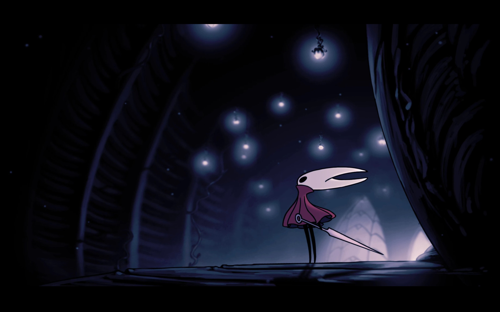
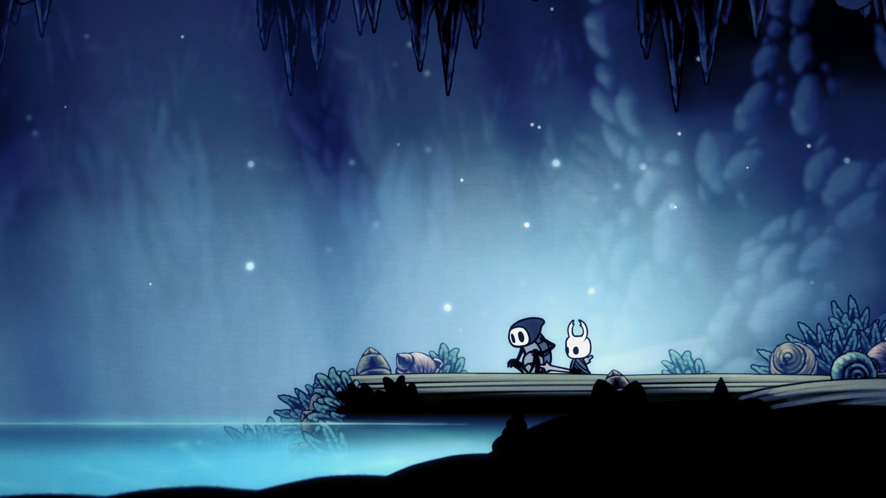
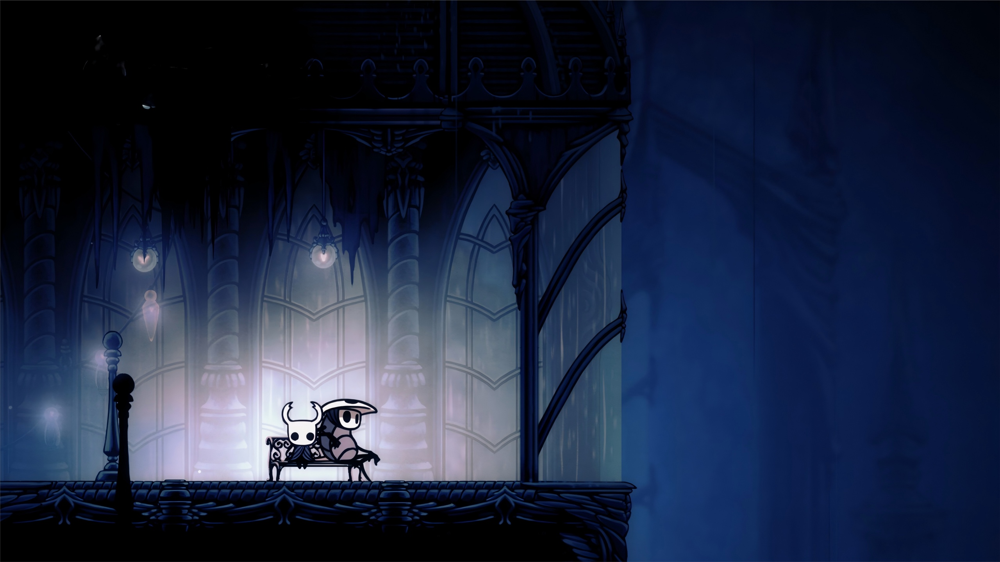
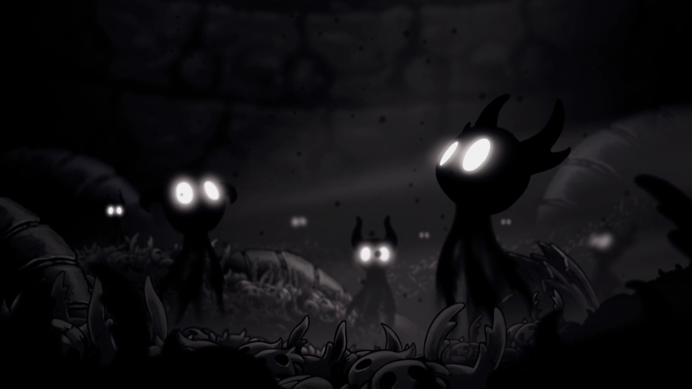
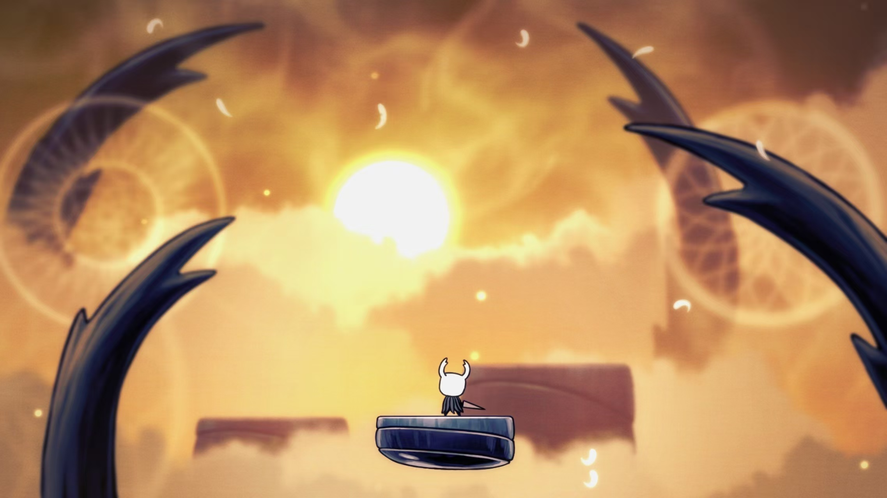
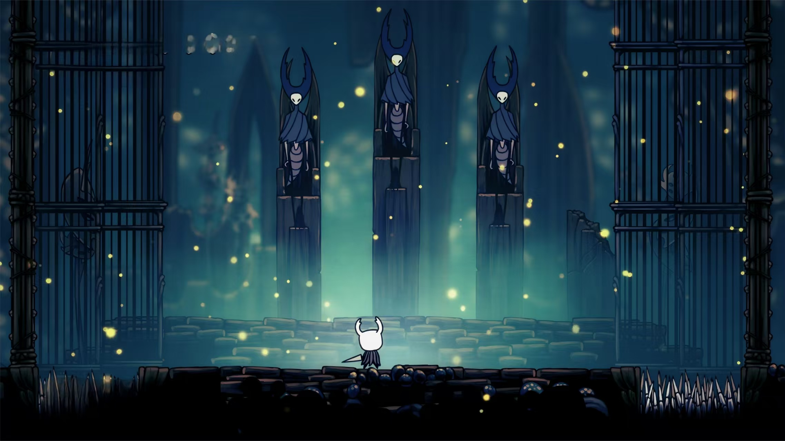

Hollow Knight
无论从时间跨度抑或是游玩时长都最长的一部作品，不逊色于任何作品的神作，堪称奇迹一般的艺术。
从剧情，可玩性，画面，音乐等方面都打磨的有极高水准的一部作品。
游戏共有五个结局（抑或是四个），有悲壮，无奈，英雄主义乃至于登临顶峰，游戏的叙事连贯但略显隐晦，在不看攻略一般游玩的情况下能够知晓大概剧情，而仅仅是这大概便可以了解到这是一个史诗般的剧情。
一个光明之神入侵却被凡人之王封印的故事，一个被放弃的容器代替先辈封印神明抑或是彻底杀死神明的故事。
而如果是非常细致的推图的话，可以在地图的各个角落找到只言片语的遗迹文字或是npc，逐渐拼凑之下便可以得到一个完整的世界，如若感兴趣可以参考这个视频 神作《空洞骑士》究竟讲述了一个怎样的故事？
一款游戏最核心的无疑是玩法，而空洞骑士在这一块做的相当好。作为类银河恶魔城的游戏，其在推图，打怪，跑酷等方面做到了非常好的平衡。或许会有迷路，也或许会被boss折磨十几次，甚至有可能会因为臭名昭著的跳跳乐玩到破防。但如若不急着通关，那么它完全可以让你沉浸，这是第一款能让我真正感觉到是自己，而不是主角在变强的游戏，几十种攻击方式和形态完全不同的小怪，十几个不同的区域地图，以及数十种各具特色的boss，让这段旅程永远不会无聊。游戏并非简单粗暴的堆砌元素，而确实是全部有着用心设计，例如在一段剧情过后，初始地图的难度和模样都会发生彻底的改变，连同其内的小怪一起发生变异，简直相当于一个新地图，而这显示了剧情和游戏里的世界并未割裂，你的行为会切实的影响这个世界，以此，更令人沉浸其中。
对于这个游戏的体量来说，其价格相当良心。区区58r的价格，但想要体验其全部内容需要数百个小时，寻神者dlc中的四锁五门以及手办屋就足够人消磨上百个小时（实际上远远不止）。与其他一些游戏的boss连战不同，team cherry为通关五门单独做了一个结局，并且连战和boss挑战区域有单独的区域，其内装饰并不显得敷衍或潦草，一种庄严或说神性会让人觉得“小骑士登神之地就该如此”。
有一些可能说是令人诟病的点就是地图探索吧，经典开局左转诺斯克，以及三螳螂打完左转深巢，并不是说这些地方不能去，但按照正常流程这些地图应该是较后期的，因此早期直接前往很容易导致退坑弃游。但这并不代表其地图设计不好，相反，空洞骑士的地图设计相当精妙，四通八达的同时每个地图都有着自己的特色。当游戏进行到后期，一次性打开全部地图时，那种震撼和成就感也是相当令人欣喜。
值得一提的是四锁五门，虽然时至今日我也只打通了零锁五门，但已经是竭尽全力。那天上午我对无上辐光发出最后一击时，早已筋疲力尽，随后释然地靠在椅子上长出了一口气。如果说蔚蓝的最终挑战是一场熟练度的考验的话，那空洞骑士的五门便是对手法，熟练度，运气，毅力等方面的全方位考察。看着五门结局的动画，内心的激动是难以遏制的。长达四十分钟以上的精神高度集中和频繁操作绝对是不小的挑战。而与战斗方面相对应的跑酷方面的最终挑战——苦痛之路也是速通的著名项目，以此衍生出来的梗更是数不胜数。那些速通高手仅仅利用二段跳，贴墙跳冲刺，下劈等操作就能实现看起来像是贴地飞行的夸张效果，我想我大概永远也不会达到那种程度。
作为战斗更占大头的一款游戏来说，其战斗体验不得不提。在我玩过的所有2d平台游戏中，空洞骑士的手感无疑是首屈一指的。三种蓄力剑技，三种法术，以及最简单也最常用的平砍，配合上两种冲刺，便能组合出令人眼花缭乱的连招。作为操作者来说，攻击后的反馈，和boss之间的交互性，都让空洞骑士的战斗有足够多的爽感，尤其是在熟练度高了之后，见缝插针的贪刀和驾熟就轻的闪避无疑是一种享受。而其独特的无惯性移动和创新性的下劈在创造更多容错的同时也让战斗的多样性进一步提升。
美术同样是空洞骑士广受称赞的一点，其主体风格较为阴郁，但不同区块的地图又不乏轻盈灵动或是生机勃勃，当然也会出现那种黑暗沉重的，甚至会有某些地图展示出一种工厂一般的繁忙景象。不得不提的是辐光战的场地，那是确确实实光明神的领地。当远处明亮的太阳张开双翅，化身辐光出现在面前时，以微末之躯挑战神明的史诗感便油然而生，在二三阶段切换时，出现的台阶便也是真正的登神长阶——抑或是弑神。这是一场为了拯救已经毁灭的王国，一场将所有人从梦境中拯救的战斗。
极具辨识度的音乐亦是空洞骑士极为出众的一点。在今年夏天，中国大陆举行了一系列的空洞骑士音乐会，一系列交响乐似乎能将所有人带回到在偌大的王国里行走的场景。我不懂音乐，但的确可以听出残破的王国里音乐的悲伤和缅怀。一座永远下着雨的城市，一座从建造之时便用灰色的钢铁和不会反光的玻璃建筑起的城市，黑色的雨水一刻不停地流入无人的下水道。这座城市失去了国王，它最初的故事屹立在城市的最底端，而如今城市内的居民沉浸于带来毁灭的梦境中，看似欢乐的音乐无法掩盖这座曾经伟大的首都如今的空洞，它失去了灵魂。这是泪城，也是所有地图中音乐给我最深刻印象的城市。
这是如同奇迹一般的作品，也是陪伴我最久的一部作品，在任何时候都没有删除的念头，其带给我的触动和感觉是独一无二的。我可以对着没有任何奖励的苦痛之路枯坐一个下午，在看到末尾一段短短的cg后释然的双手离开键盘，而不在乎中途有多么辛劳。我愿意一遍又一遍地打着几十分钟的五门，即便只要死亡便不会有任何收益。诚然我会因为一次次的死亡懊恼烦躁，但这个游戏本身便是我排解生活中的烦躁与痛苦的第一选择，在一次次与强敌的对战中，我反而能得到心灵上的放松。
我忘记了所有悲剧，所见皆是奇迹。
《Hollow Knight》
可玩性：5+/5
音乐：5/5
画面：5+/5
剧情：5/5
总评：5+/5






P.S.
P.S.S